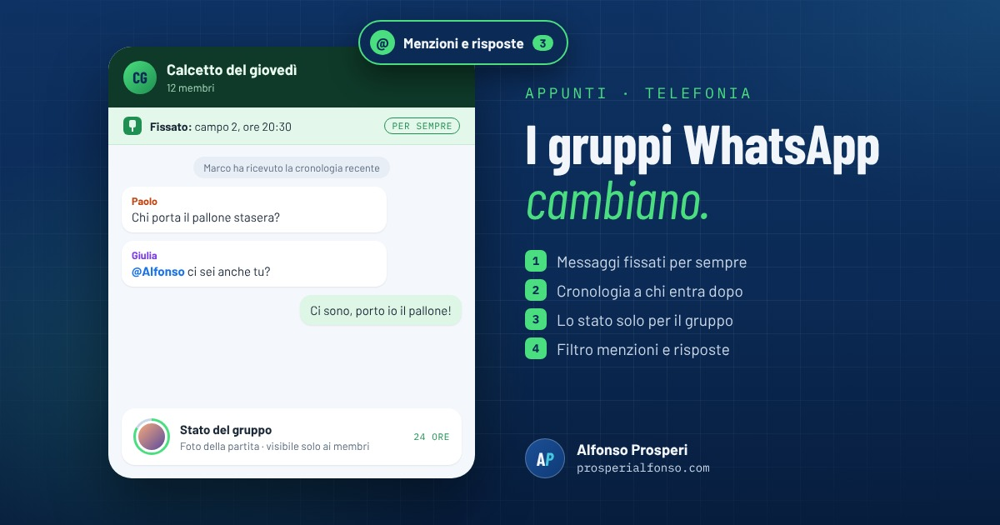

I gruppi WhatsApp sono il posto dove passa mezza vita: la classe dei figli, la squadra, il condominio, la famiglia. E sono anche il posto dove le cose importanti si perdono più facilmente, sommerse da cento messaggi. Il 29 ottobre WhatsApp ha annunciato quattro novità pensate proprio per questo. Vediamo cosa fanno e come usarle.
1. Messaggi fissati per sempre
Fino a oggi un messaggio fissato in cima alla chat restava lì per 24 ore, 7 giorni o al massimo 30 giorni. Ora puoi lasciarlo fissato senza scadenza. È perfetto per le informazioni che servono tutto l'anno: l'orario degli allenamenti, l'IBAN per la quota, le regole del gruppo, il numero dell'amministratore di condominio.
Come si fa: tieni premuto sul messaggio, scegli Fissa e, tra le durate proposte, scegli quella senza limite. In una chat si possono fissare fino a tre messaggi. Nei gruppi gli amministratori possono decidere se fissare è permesso a tutti o solo a loro, dalle impostazioni del gruppo.
2. La cronologia per chi entra dopo
Quando entra una persona nuova in un gruppo, di solito trova una chat vuota e chiede "cosa mi sono perso?". Da quest'anno chi la aggiunge può inviarle anche i messaggi recenti. La novità è che ora si può fare anche dopo, quando la persona è già dentro: basta toccare il suo nome nella chat e scegliere di inviarle la cronologia recente, senza inoltrare i messaggi uno per uno.
Una nota sulla privacy: i messaggi inviati così restano protetti dalla crittografia end-to-end, come tutte le chat personali.
3. Lo stato del gruppo
Lo stato di WhatsApp (foto, video o testi che spariscono dopo 24 ore) di solito lo vedono tutti i tuoi contatti. Con lo stato del gruppo puoi condividerlo solo con i membri di un gruppo specifico: le foto della gita nel gruppo della classe, quelle della partita nel gruppo della squadra, senza mostrarle a tutta la rubrica. Tutti i membri possono vederlo, reagire e pubblicare il proprio. Come lo stato normale, scompare dopo 24 ore.
4. Il filtro "Menzioni e risposte"
Nella lista delle chat, in alto, ci sono già i filtri come Da leggere, Preferiti e Gruppi. Se ne aggiunge uno nuovo che mostra solo le chat di gruppo non lette in cui qualcuno ti ha menzionato, ha risposto a un tuo messaggio o ha scritto a @tutti. Quando hai dieci gruppi con cento messaggi ciascuno, è il modo più rapido per capire dove ti stanno cercando, senza leggere tutto.
Tre trucchi che forse non conosci
- Rispondere in privato. Tieni premuto su un messaggio del gruppo e scegli Rispondi in privato: si apre la chat singola con quella persona, con il messaggio citato.
- Sondaggi con una sola risposta. Quando crei un sondaggio, disattiva "Consenti più risposte": ognuno potrà scegliere una sola opzione, utile per decidere data o luogo.
- L'etichetta accanto al nome. Nei gruppi puoi aggiungere una breve descrizione al tuo nome, per esempio "papà di Luca" o "allenatore", così chi non ti ha in rubrica capisce subito chi sei.
Non le vedi ancora?
WhatsApp distribuisce le novità un po' alla volta, a livello mondiale: alcuni le trovano subito, altri dopo qualche giorno, anche con la stessa versione dell'app. Aggiorna WhatsApp dal Play Store o dall'App Store e, se le funzioni non compaiono, riprova nei giorni successivi. Non serve fare altro.
E all'orizzonte ci sono altre novità già in prova: chiamate con un link per chi non ha WhatsApp e la possibilità di usare fino a tre account sullo stesso telefono. Ne riparleremo quando arriveranno per tutti.
Fonti
- WhatsApp, Never miss what matters in your group chats (blog ufficiale, 29 ottobre 2026)
- Skuola.net, chat di gruppo su WhatsApp: quattro nuove funzioni e quando arrivano
- iSpazio, WhatsApp: quattro novità per le chat di gruppo (31 ottobre 2026)
- SmartWorld, WhatsApp aggiorna i gruppi con quattro nuove funzioni (30 ottobre 2026)
- Digital Trends, WhatsApp group chats get permanent message pins and group status (31 ottobre 2026)
- GuruHiTech, novità WhatsApp in prova: chiamate con link e tre account